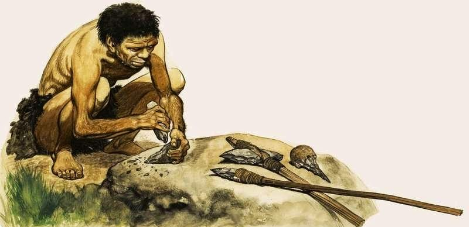

História da Tecnologia
A história da tecnologia é marcada por grandes revoluções que mudaram a forma que vivemos e entendemos o mundo ao nosso redor. A tecnologia é definida como a teoria geral e/ou estudo sistemático sobre técnicas, processos, métodos, meios e instrumentos de um ou mais ofícios ou domínios da atividade humana.
Tecnologia e suas origens
A palavra tecnologia tem origem no grego "tekhne" que significa "técnica, arte, ofício" juntamente com o sufixo "logia" que significa "estudo". As tecnologias primitivas ou clássicasenvolvem a descoberta do fogo, a invenção da roda, a escrita, dentre outras.
Uma das primeiras técnicas desenvolvidas foi a atividade de lascar pedras umas nas outras a fim de formar uma ponta pontiaguda, que serviria para a caça e para o manuseio de alimentos. Foi lascando pedras que o homem descobriu o fogo, uma das tecnologias mais importantes da humanidade até hoje.
A evolução histórica da tecnologia tem início nas primeiras invenções do homem. Ao longo do tempo o ser humano desenvolveu ferramentas de caça, descobriu o fogo, criou a roda para ajudar na locomoção, tudo com o intuito de tornar a vida mais fácil.

O Fogo Como A Primeira Tecnologia Do Mundo. Porém, para os povos antigos a criação do fogo e seu descobrimento, foi considerado um fator totalmente tecnológico e que revolucionou toda uma era.
Por isso, separamos para você as 10 maiores inovações tecnológicas de todos os tempos e as que ainda prometem nos surpreender no futuro.